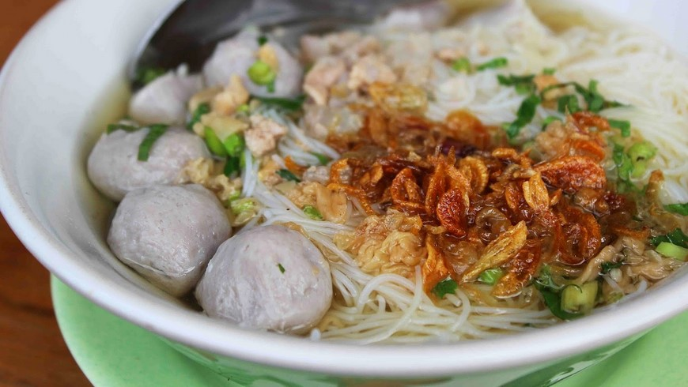
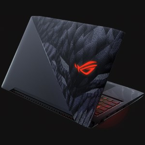
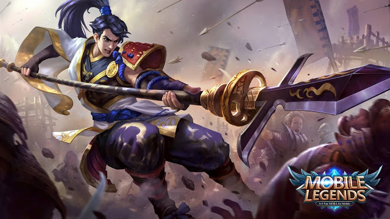

|

|
|
|
Boruto: Naruto Next Generations
(BORUTO-ボルト- NARUTO NEXT GENERATIONS),
juga dikenal hanya sebagai Boruto, manga seri
jepang yang ditulis oleh Ukyō Kodachi dan
diilustrasikan oleh Mikio Ikemoto.
|
Bakso adalah jenis bola daging
yang lazim ditemukan pada masakan Indonesia.
Bakso umumnya dibuat dari campuran daging sapi
giling dan tepung tapioka, akan tetapi ada juga
bakso yang terbuat dari daging ayam, ikan, atau
udang bahkan daging kerbau.
|
Gitar adalah sebuah alat musik
berdawai yang dimainkan dengan cara
dipetik, umumnya menggunakan jari
maupun plektrum.
|

|

|
|
|
Pro Evolution Soccer (PES)
World Soccer Winning Eleven adalah seri permainan video
sepak bola yang dikembangkan dan diterbitkan oleh Konami.
|
Republic of Gamers adalah sebuah brand
perangkat keras notebook khusus gaming
dari ASUS, perusahaan berbasis di Taiwan
yang memproduksi komponen komputer
seperti papan induk, kartu grafis,
dan notebook. ASUS belakangan ini mulai
memproduksi PDA, Telepon genggam, LCD,
dan Perangkat keras lainnya.
|
Film, juga dikenal sebagai movie,
gambar hidup, film teater atau
foto bergerak, merupakan serangkaian
gambar diam, yang ketika ditampilkan
pada layar akan menciptakan ilusi
gambar bergerak karena efek fenomena
phi.
|
|

|
|

|
|
Mobile Legends: Bang Bang adalah
sebuah permainan piranti bergerak
berjenis MOBA yang dikembangkan dan
diterbitkan oleh Moonton.
|
Matahari atau Surya adalah bintang
di pusat Tata Surya. Bentuknya nyaris
bulat dan terdiri dari plasma panas
bercampur medan magnet.Diameternya
sekitar 1.392.684 km,[5] kira-kira
109 kali diameter Bumi, dan massanya
(sekitar 2×1030 kilogram, 330.000 kali
massa Bumi) mewakili kurang lebih 99,86 %
massa total Tata Surya.
|
Warung Internet
(disingkat: warnet) adalah
salah satu jenis wirausaha
yang menyewakan jasa internet
kepada khalayak umum.
|
{kind=link}
{kind=link}
{kind=link}
{kind=link}
{kind=link}
{kind=link}